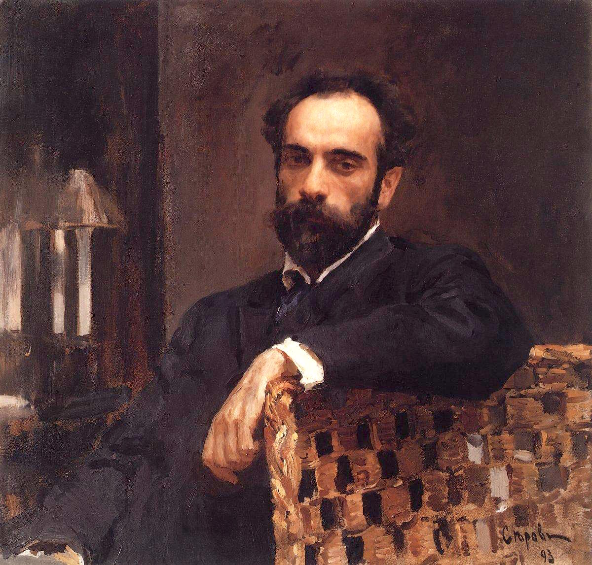

Isaac Ilyich Levitan
伊萨克·伊里奇·列维坦 1860.08.30 - 1900.07.22

Figure 1: 肖像画
列维坦出生于立陶宛的一个犹太人家庭，祖父是一位犹太教拉比，父亲会德语和法语，是一家法国公司的翻译。1870 年全家移居莫斯科。1873 年列维坦进入 “莫斯科绘画雕塑建筑学院” 学习，很快表现出对风景画的兴趣，不到一年就转入风景画班，师从著名的风景画家阿列克谢・孔德拉季耶维奇・萨伏拉索夫，并获得画笔和颜料的奖励。
1875 年他母亲去世，1877 年他父亲去世，但由于他表现出的天才，获得学校的奖学金得以完成学业。1877 年他的作品首次展出并获得广泛好评。1879 年，因为受当时沙皇俄国从大城市驱逐犹太人政策的影响，被迫移居到莫斯科郊区，但由于艺术界对当局施加压力，列维坦当年就得以迁回莫斯科。1890 年他的作品即被著名的艺术品收藏家特列季亚科夫购买。
1884 年，列维坦加入巡回展览画派的活动，1891 年成为正式成员，并和著名作家契诃夫成为终生的好朋友，其间有一段时间因为契诃夫的作品中以他为模特而断交，但后来又言归于好，有舆论认为列维坦曾经爱上契诃夫的妹妹。
从 1880 年开始，他和契诃夫兄弟一起为图画杂志《莫斯科》工作，绘制插图，还曾为歌剧设计过布景。
列维坦被大自然的美所深深吸引，他一生遗留下有数千件作品，但基本没有描绘城市的，他一生没有娶妻成立家庭，沉迷在大自然的美中。他在临死病重中的最后一件作品，还是充满阳光和平静。
1897 年列维坦被选为皇家美术院成员，1898 年被任命为风景画分会主席。1900 年在克里米亚去世，先葬在犹太人公墓，1940 年迁葬到诺沃德维奇公墓，和契诃夫葬在一起。

Figure 2: Sunny Day, 1876

Figure 3: Sokolniki. Autumn, 1879

Figure 4: Bridge. Savvinskaya Sloboda, 1884

Figure 5: Savvinskaya settlement near Zvenigorod, 1884

Figure 6: Birch grove, 1885-1889

Figure 7: Nach dem Regen, Plöss, 1889

Figure 8: Spring in Italy, 1890

Figure 9: The Vladimirka, 1892

Figure 10: Over Eternal Quiet, 1894

Figure 11: March, 1895

Figure 12: Golden Autumn, 1895

Figure 13: Water lilies, 1895

Figure 14: Evening approaches, 1898

Figure 15: The Lake. Rus’, 1900